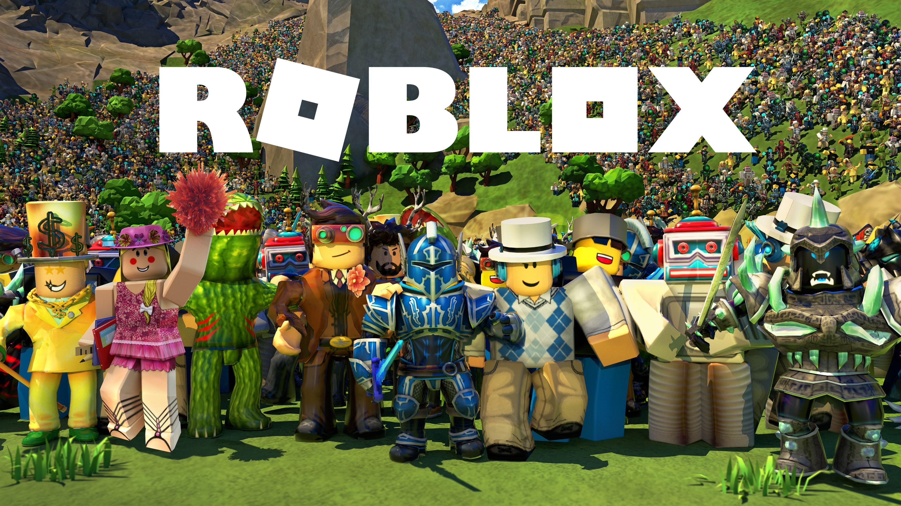

Hi, I'm Nazwar.
Exploring systems, code, and everything in between.
A little about me.
I'm Nazwar — electrical engineering student and system explorer focused on building fast, reliable tools and refining computing environments.
Instead of accepting default configurations, I enjoy peeling back the layers—optimizing Linux systems, crafting custom command-line utilities, tweaking display compositors, and configuring efficient terminal workflows. When I'm away from the terminal, I enjoy games like Skyrim SE, Stardew Valley, and Roblox.
Tools I Live In.
A curated stack of operating systems, development tools, and CLI utilities I use daily.
Systems
Development
Workflow
Terminal-first.
Interactive shell simulation to explore my digital workspace environment.
Games I Keep Coming Back To.
A small personal collection of game worlds I appreciate for their atmosphere, mechanics, and replayability.
Skyrim Special Edition
Masterpiece in open-world exploration, modding possibilities, and iconic nord atmosphere.

Stardew Valley
Relaxing pixel-art farming life with endless charm, cozy soundtrack, and deep progression.

Roblox
Creative sandbox platform with diverse community experiences and infinite mini-games.
Find me around the internet.
Feel free to reach out for collaboration, dotfile chats, or gaming.